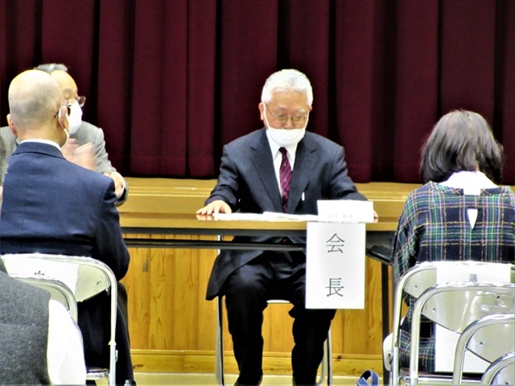
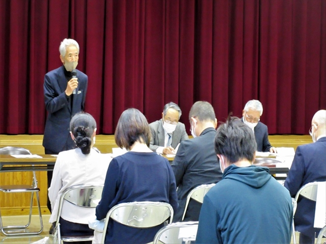
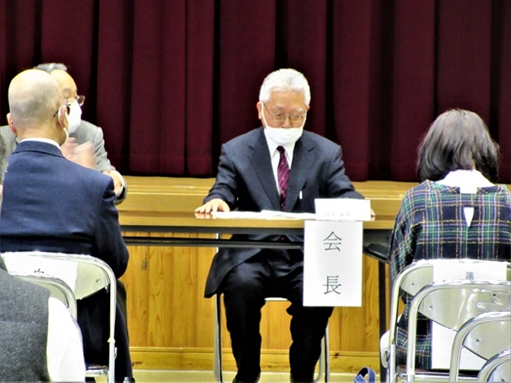
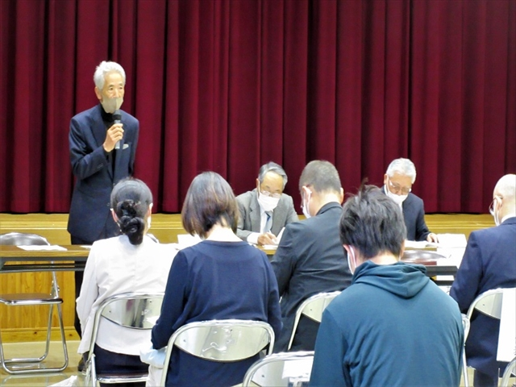

2023年度 活動報告
2022年度■総会 2023年4月15日(土)
2023年4月15日(土) 13時30分から、大府公民館大会議室にて総会が行われました。
昨年度同様、規模を縮小して、感染対策を行ったうえでの開催となりました。
- 


- 
2023年4月15日(土) 13時30分から、大府公民館大会議室にて総会が行われました。 昨年度同様、規模を縮小して、感染対策を行ったうえでの開催となりました。
- 
- 